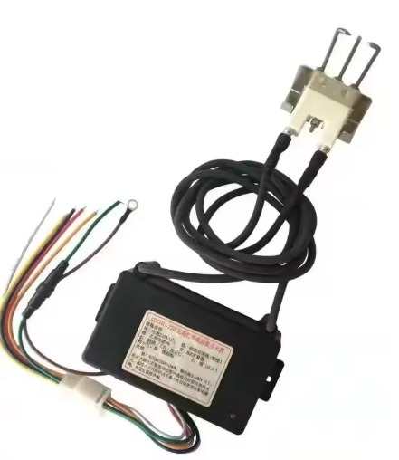

Nuestros Trabajos

Proyecto 1
Módulo de encendido para quemadores a GLP industriales, especiales para secadores de Cacao, Maíz, Café, Soya, Arroz, etc. Disponible en voltajes 220V y 120V.

Proyecto 2
Medidores de humedad y temperatura para granos, instalado en secadores específicos para obtener un control en tiempo real, mejorando y optimizando los procesos.